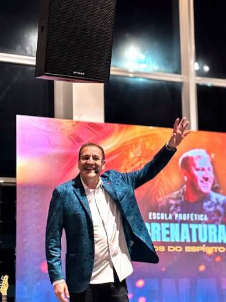
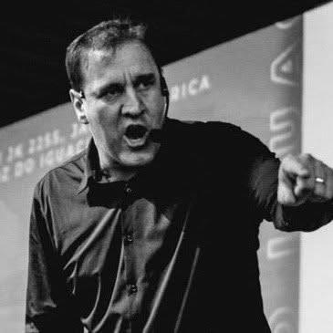
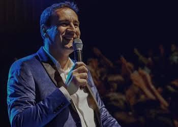
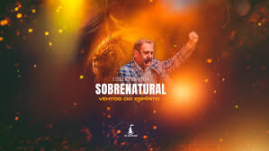
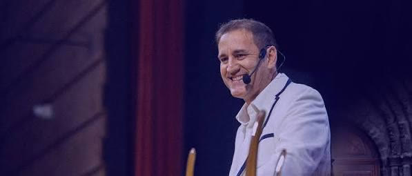

Sinopse01 / 05
Corpos Transmissores de Glória
PTEN
Adquirir na Dabar
Presença e revelação para as nações.
Edificar o Reino dos céus em todas as nações.

Uruguaio, conferencista, escritor, empresário e consultor. Décadas formando líderes em vários países.
Encontro pessoal com Jesus e o chamado ao ministério.
Escrituras, libertação e enchimento do Espírito.
Escolas de ativação para líderes. Hoje são 20.
Livros pela Editora Dabar, em português e inglês.
Metodologia R.E.S.E.T. e fundação da DR Business.
Participantes por ano em cursos presenciais
Escolas DR disponíveis para igrejas
Livros publicados pela Editora Dabar
Obras traduzidas para português e inglês

Existe um propósito profético que não será desbloqueado por orações passivas de lamento.Ap. David Rebollo · @dr.davidrebollo
O ministério vem primeiro. Escolas e negócios nascem dele.

I · MinistérioConferências e congressos para igrejas e redes em vários países.

II · FormaçãoSeminários de ativação para líderes. Sua igreja pode receber uma escola.

III · NegóciosConsultoria e escola de negócios com a metodologia R.E.S.E.T.
Os livros orbitam a chama. Use as setas para girar e toque na capa da frente para ler a sinopse.
Conferências, escolas, treinamentos e parcerias.